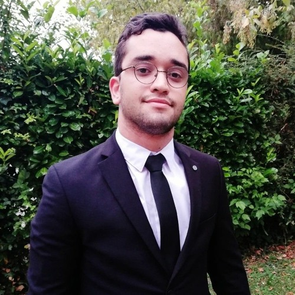

Étudiant à Audencia spécialisation Finance et Contrôle de Gestion. Recherche de stage en contrôle de gestion ou audit à partir de janvier pour une durée de 6 mois.
Formation
Expériences :
Compétences
Video action polio
Le District 1510 (Pays de la Loire et Deux-Sèvres) met en place une opération « cousue main » pour laquelle tout est préparé et dont la mise en œuvre est d’une simplicité extrême !! Cette opération s’inscrit dans les deux axes stratégiques – santé et environnement – du Rotary International.